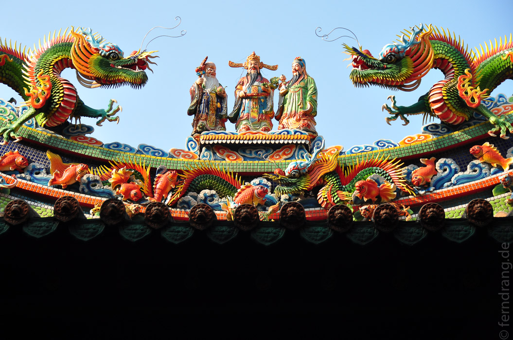

28/08/2009
Taipeh (Taiwan)
Nach 13 Stunden Flug sind wir passend zum Frühstück in Taipeh gelandet. Wir konnten also sofort damit beginnen, uns die Füße platt zu laufen. Wir sind Ewigkeiten durch die irre Hitze und die verwirrenden Straßen Taipehs gelaufen, die überall gleich aussehen und praktischer Weise auch oft genug gleich heißen. Auf den ersten Blick typisch chinesisch. Die Menschen sind aber im Gegensatz zum Festland sehr aufgeschlossen und freundlich. Das überbrückt aber leider die Sprachbarriere nicht. Keinem Taxifahrer konnten wir klar machen, wohin wir wollten - auch Stadtpläne haben nicht geholfen.
Von einer Unmenge kleiner Buden abgesehen, die Dinge zubereiten und verkaufen, die als Nahrungsmittel im weitesten Sinn durchgehen könnten, hat Teipeh auch einige Sehenswürdigkeiten zu bieten. Allen voran das Palastmuseum, das unglaubliche 600.000 Kostbarkeiten aus dem alten China zu bieten hat, die beim großen Formosa-Umzug irgendwie im Gepäck gelandet sind. Das absolute Highlight der Sammlung ist der Jadesalat - ein Salatkopf, der so kunstfertig aus einem grün-weißen Stück Jade gefertigt wurde, dass man hineinbeißen würde, wenn er nicht in einer Vitrine läge. Architektonisch beeindruckt das Ehrenmal für Chiang Kei-Scheck. Die Anlage ist wirklich vollkommen überdimensioniert, aber doch sehr schön anzusehen. Nebenan stehen weitere Prestige-Projekte wie die Konzerthalle. Allerdings heißt "nebenan" in Taipeh nicht, dass kein langer Marsch wird.

Es gibt viele, meist taoistische Tempel in Taipeh, die sich einer regen Nutzung erfreuen und in den Alltag der Menschen integriert zu sein scheinen. Die Tempel verströmen trotz der düsteren, drachenbeladenen Gebäuden ein fröhliches Durcheinander von Opfergaben (Lebensmittel), Spenden (Münzgeld) und Rauch-Opfern (alles, was brennt). Über diesem Treiben ragt das 500m hohe Rekordhochhaus 101 auf und zeigt Festlandchina seine lange Antenne. 
Jetzt sind wir in wenigen Tagen mindestens eine Marathonstrecke durch Taipeh gelaufen und freuen uns nach der schwülen Hitze auf "Abkühlung" in Bali.